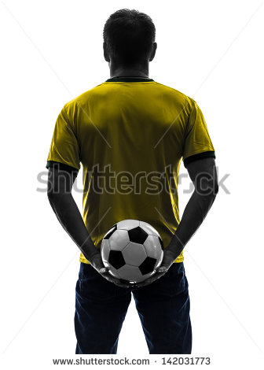

The world's best brands, in our local shop
Soccer United/Team Kits is Kelowna’s newest soccer shop featuring high quality soccer gear and kits sourced from across Europe!
Some of our featured brands include Joma from Spain, Macron and Lotto from Italy, GECO and Jemsz from Germany and Belgium, Inaria from Bauer Sports, Xara from the USA along with the classic Umbro.
Team Kits has dressed professional teams in the USA as well as local teams and clubs throughout Canada and the USA.
Soccer United provides the best in equipment from England as a Canadian distributor for Precision Training, Storelli, Macron, Mitre and a growing list of specialty soccer gear.
Find us in:
- Mission Sports
- #4 - 2121 Springfield Road
- Kelowna, BC V1Y 7X1
